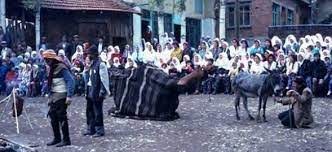

KÖY SEYİRLİK OYUNLARI (KÖY ORTA OYUNLARI)
Köy orta oyunları, köylülerin uzun kış aylarında ve hususiyle düğünlerde, bayramlarda eğlenmek ve vakit geçirmek için düzenleyip oynadıkları dram karakterli temsillerdir. Bu temsiller, târihî kaynakların verdiği bilgilerden anlaşıldığına göre çok eski bir sözlü geleneğe dayanmaktadır.
Bu gelenek 1071 târihinden sonra da ozanların yanı sıra, Anadolu’da devam etmiş ve bugüne kadar yaşayıp gelmiştir. Karagöz ve yakın devirlerde tam karakterini kazanan şehir kültürü mahsulü orta oyunu’ndan da ayrı ve eski olan bu oyunları;
a) Ritüel oyunlar:
- 1 – Yılın değişmesiyle ilgili oyunlar (Köse – gelin oyunu gibi)
- 2 – Mücerred fikirlere bağlı oyunlar (Arap oyunları)
- 3 – Hayvan kültüne bağlı oyunlar (Saya Gezme oyunu)
- 4 – Bitki kültüne bağlı oyunlar (Cemalcik, mahsulün elde edilmesi oyunu)
- 5 – Mezheb merasimleri (Alevî ve Bektaşiler arasında tarikat karakteri taşıyan temsiller)
b) Profan mâhiyetteki oyunlar:
- 1 – Günlük hayattan alınanlar (Tarla Sınırı, Kalaycı oyunları)
- 2 – Masallara bağlı oyunlar : (Keloğlan oyunu)
- 3 – Destanlara veya saz şâirlerinin hayatlarına bağlı oyunlar (Göçebe oyunu)
- 4 – Târihî hâdiselere bağlı oyunlar : (İstiklâl Savaşı oyunu)
- 5 – Hayvanları taklid edici oyunlar (Kartal ve Tilki oyunları)
- 6 – Samıt veya lâl oyunları (pantomim) (= Yaş, Yılbaşı, Berber, Kovandan Arı Çalma, Ali ile Fatoş oyunları)
- 7 – Bebek (Kukla) oyunları (= Kaaraçör oyunu) bölümlerine ayırmak mümkündür.
Köylülerin;
- 1 – güldürücü,
- 2 – acıklı,
- 3 – sessiz (samıt veya lal),
- 4 – bebek (kukla)
olmak üzere gruplandırdığı bu oyunların en mühim vasfı anonim oluşlarından geliyor. Bu oyunları köylerde adları bilinen veya bilinmeyen gençlerle orta yaşlılar oynarlar. Aralarında en kabiliyetlileri rejisör vazifesini görür. Kadınların da kendi aralarında bu oyunlardan bâzılarını oynadıklarını görüyoruz. Oyunlar kapalı yerlerde veya açıkta oynanmaktadır. Oyunlarda lüzuma göre çok basit bir dekor fikrini veren malzeme kullanıkyor. Bazen bir deve veya atın işe yaradığı görülür. Bu oyunlarda makyaj ve kostümler de yer almaktadır.
Çocuktan ihtiyara kadar pek çok seyirci kütlesi bulan bu ayrı kaynaklara bağlı oyunlar zamanımıza kadar yaşayıp gelmiştir.